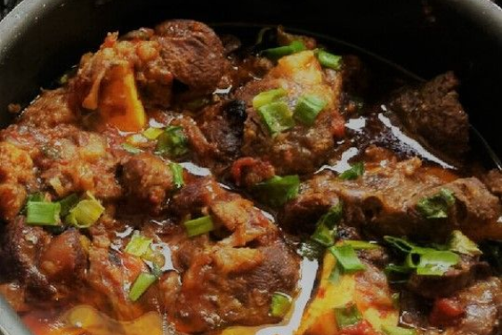

Sul
Marreco recheado
Um prato tradicional da Alemanha direto para a mesa do sulista. Esse é o marreco recheado, uma iguaria deliciosa, porém, nada fácil de preparar.
Espinhaço de ovelha com aipim

Dessa vez a carne é a de ovelha. O espinhaço é uma parte da ovelha que vai do pescoço ao lombo e, normalmente, é dividido em pedaços (nacos, ripas) para ser consumido.